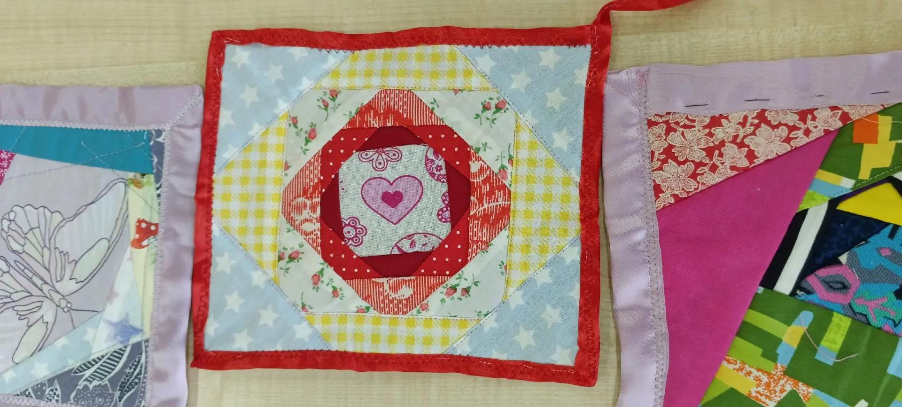
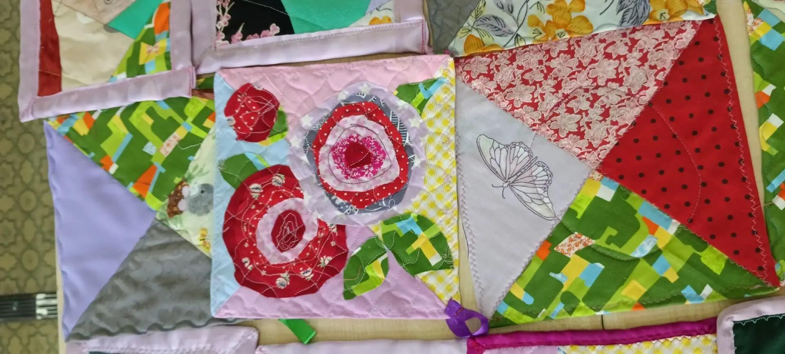
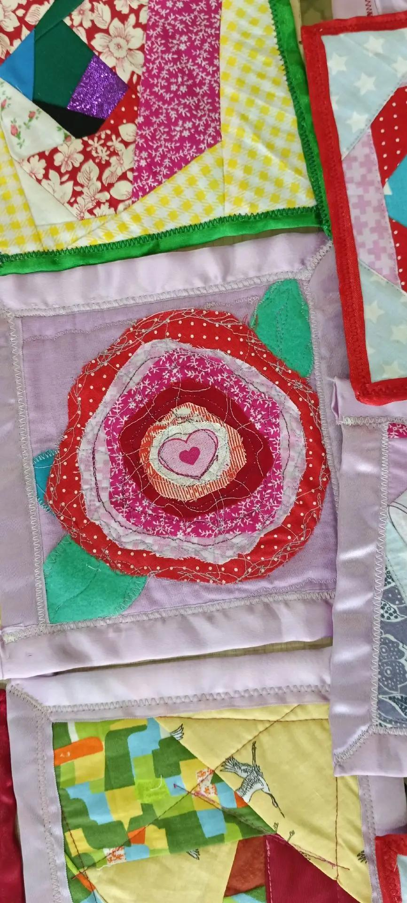
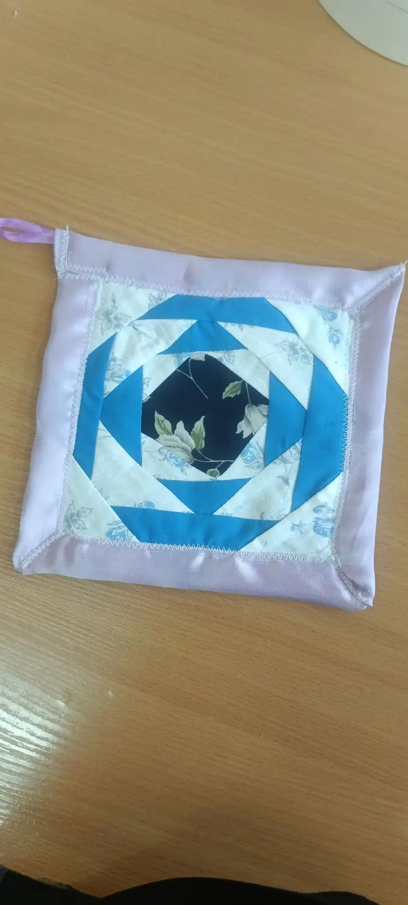
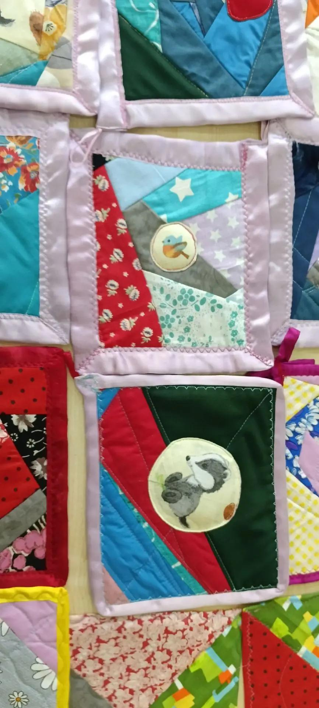
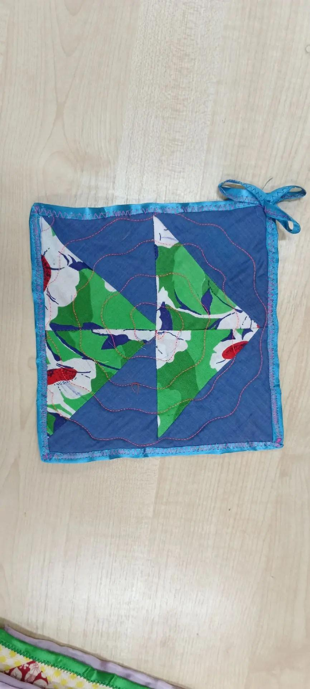
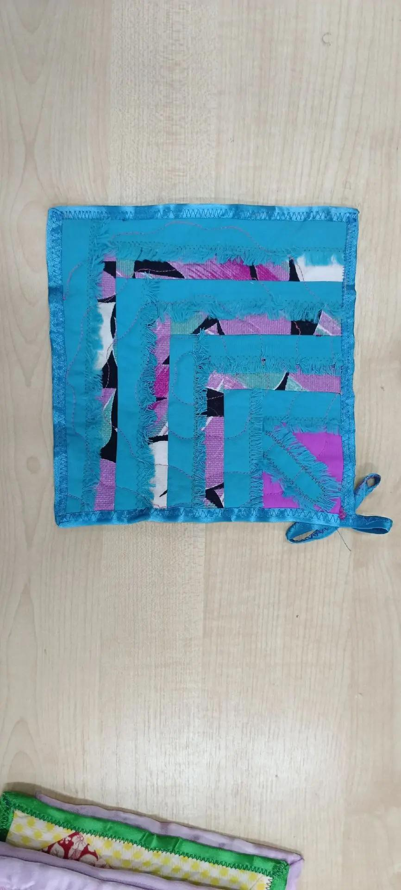
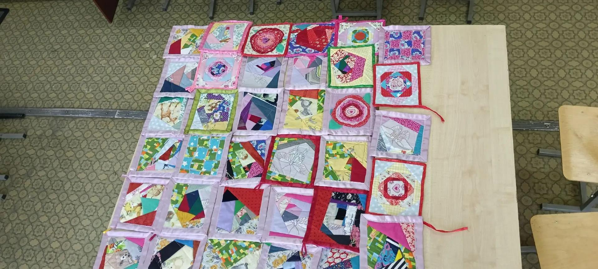
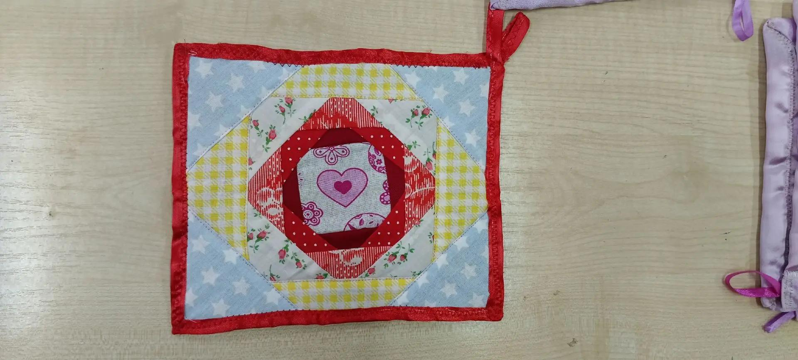
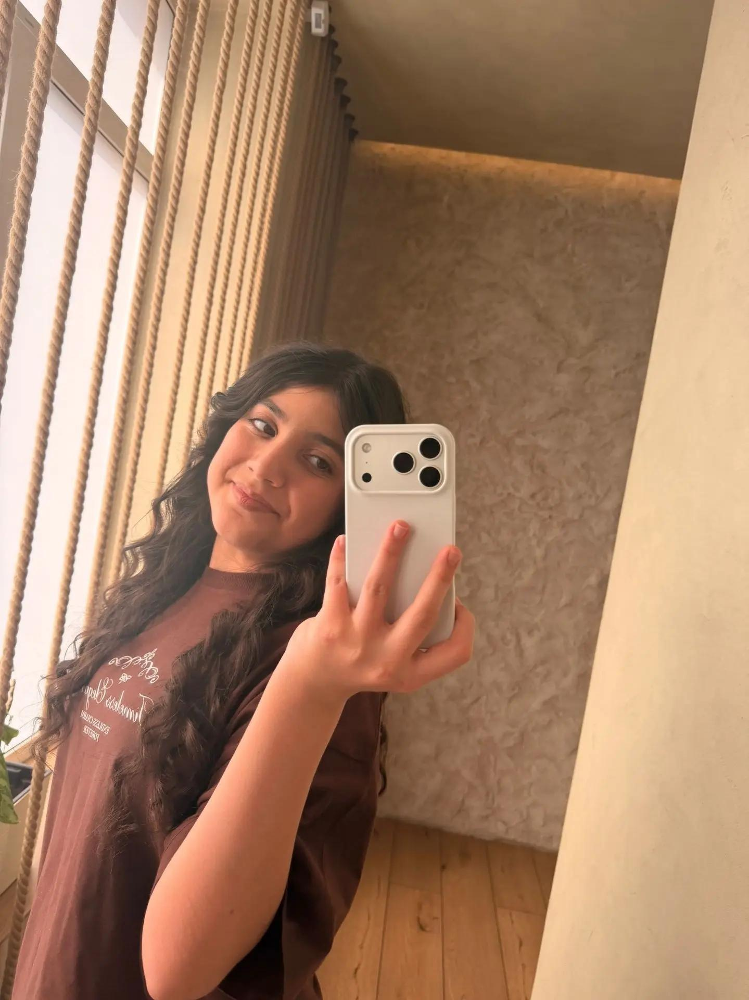

Покупная открытка порадует один день, а потом будет годами разлагаться на полигонах Клина, загрязняя наше Подмосковье. Текстильный апсайклинг — это другая философия. Каждая прихватка создана из спасенных материалов. Это долговечный предмет, который бережет природу.

Мы шьем по 3 прихватки для мам от абсолютно каждого класса всей нашей школы! Посмотри, сколько уникальных узоров у нас уже получилось сделать вместе с другими классами.


Ученица 8 «В» класса школы имени Маргариты Калининой. Проект зародился, когда ко мне обратилась учительница технологии Ольга Анатольевна Фомичёва с важной задачей: найти полезное применение накопившимся отрезам тканей и плотного фетра.

Мы используем толстый фетр как скрытый внутренний защитный слой. Он обладает низкой теплопроводностью. На данный момент сшито уже 60 прихваток, наша цель к празднику — 80 штук!


Здесь представлены наши первые работы: узоры «Сердце», концентрические круги «Роза», ромбы со вставками и симметричные квадраты.



